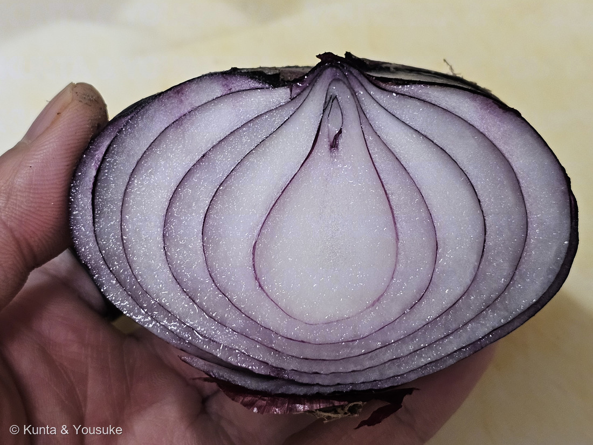
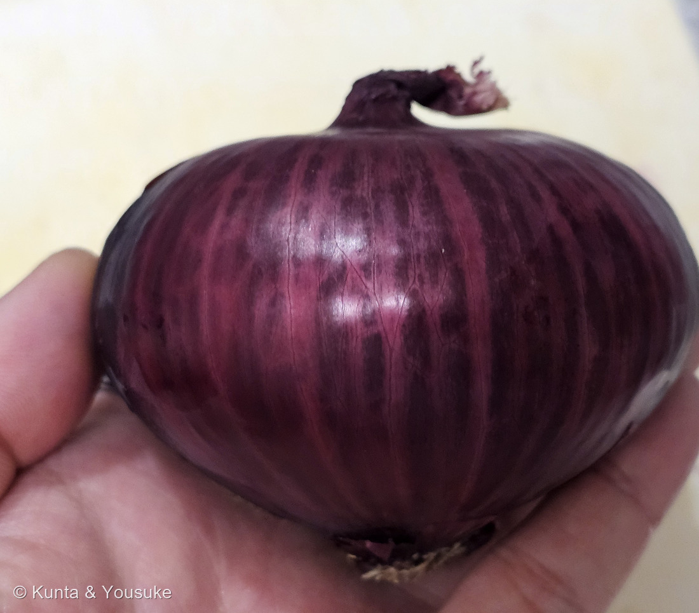
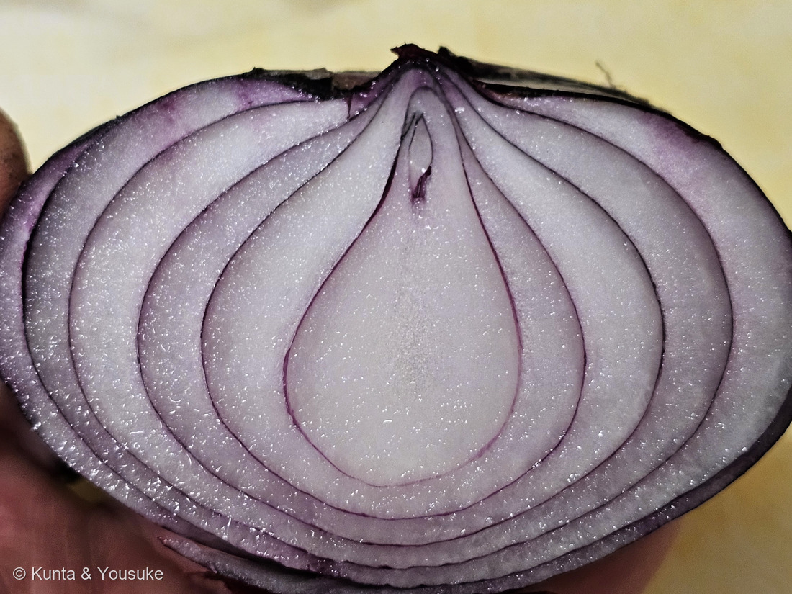
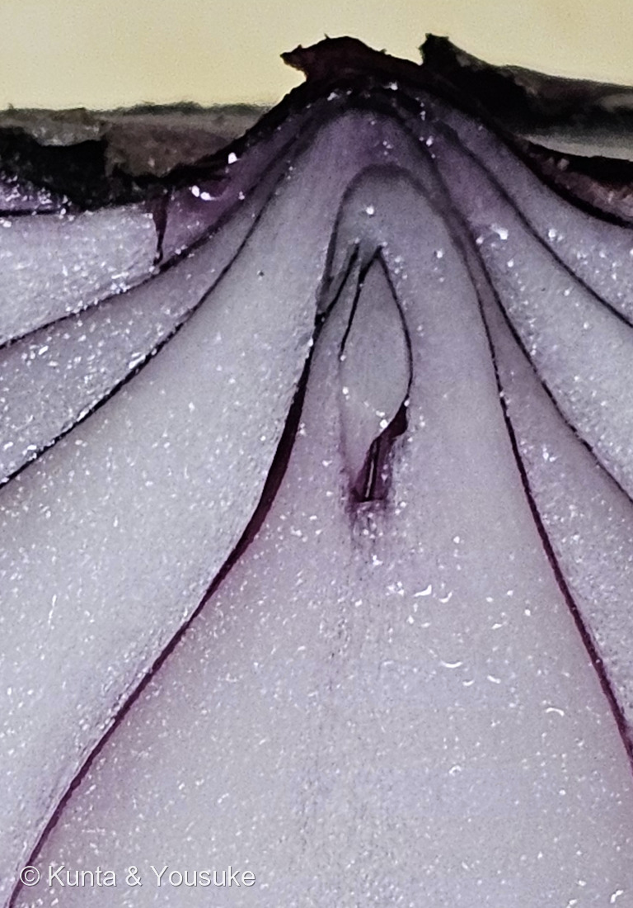

地図を読み込んでいるよ…
🔍 写真も地図も、押しているあいだ拡大して見られるよ（スマホは指を置いてすこし待ってね）。
🌍 の地図＝この子がもともと自生している場所を緑に。中央アジアとされる。⚠でも、野生種はいまだに見つかっていないんだ。くわしくは下の地図の説明を見てね。
⭐⭐この緑は、図鑑でもとくべつな意味を持っているよ＝この植物の「野生の姿」を、だれも知らないんだ。⚠日本語版Wikipediaは「原産は中央アジアとされるが、野生種は発見されていない」と書き、英語版は「A. cepa is known exclusively from cultivation（この種は、栽培されている姿でしか知られていない）」「Its ancestral wild original form is not known（祖先にあたる野生のもとの姿は、分かっていない）」と書いている。⭐⭐⭐7000年ものあいだ人が育て続けた結果、もとの姿が分からなくなってしまった＝畑にはこんなにいるのに、ふるさとには一株もいない。⚠⚠だから、この緑は「ここに野生のタマネギがいる」という意味ではないよ＝出典が「中央アジアとされる」としか書いていないので、ぼくが中央アジア5か国（カザフスタン・キルギス・タジキスタン・ウズベキスタン・トルクメニスタン）とアフガニスタンに広げたもので、ちがう読み方をしたので、正直に書いておくね。⭐似た話は図鑑にもあるよ＝285 リンゴは、祖先の野生種（天山山脈の Malus sieversii）がちゃんと残っている＝⭐⭐タマネギは、その祖先が消えてしまった側なんだ。⭐同じ「中央アジア」でも、ずいぶんちがうね。
⚠ 地図は国（日本と中国だけ県・省）までしか塗れないから、ほんとうの分布より広く見えていることがあるよ。地図はだいたいの場所。正確なところは、上の文を見てね。
タマネギ（玉葱）
Allium cepa L.
別名 オニオン（⭐写真の子は 赤タマネギ・紫タマネギ・レッドオニオン と呼ばれる品種群のひとつだよ）
ヒガンバナ科 · Amaryllidaceae（ネギ亜科 Allioideae・ネギ属 Allium）── ⭐124 アリウム・274 ニラと同じネギ属で3人目／⭐この子を入れて、ヒガンバナ科は図鑑に10人
燻太さんの言葉「普通のタマネギと違って、上側じゃなくて下側が尖っていたよ。でも切ったときの感じは同じで、涙が止まらない。昔の人はよくこの植物を食べようと考えたよね。」── ⭐⭐「下側が尖っている」は写真で確かめられたよ。そして「涙」と「昔の人」は、ひとつの話につながっていたんだ
⭐⭐⭐ 名前と学名の由来 ── ニンニクの仲間の、タマネギ
- 学名は Allium cepa L.＝⭐リンネの『植物の種』（1753年）で記載された。
- ⭐⭐属名 Allium は「ニンニクの古典ラテン名」、種小名 cepa は「ラテン語でタマネギ」。⭐つまり学名をそのまま読むと「ニンニク属の、タマネギ」。⭐名前じたいが、台所の二人を並べているんだ。
- ⭐英語の onion も、この cepa から来ている＝スペイン語 cebolla、イタリア語 cipolla、ポーランド語 cebula、ドイツ語 Zwiebel。⭐ヨーロッパじゅうが、同じ一語からこの野菜を呼んでいるよ。
- 和名の由来は「鱗茎が玉のように大きくなる葱のなかまという意味」。⭐見たままの、まっすぐな名前だね。
- ⭐図鑑のネギ属は、これで3人目＝124 アリウム（見て楽しむネギ）、274 ニラ（葉を食べるネギ）、そしてこの子（玉を食べるネギ）。
⭐⭐⭐⭐⭐ 玉ねぎは、茎じゃない ── 葉のかたまりと、小さな茎
- ⭐⭐⭐英語版Wikipediaの一文が、写真①のぜんぶを言っているよ――「The bulbs are composed of shortened, compressed, underground stems surrounded by fleshy modified scale (leaves) that envelop a central bud at the tip of the stem」＝鱗茎は、短く押しつぶされた地下の茎と、それをとりまく多肉化した鱗片（葉）と、茎の先端の中心の芽でできている。
- ⭐だから、玉ねぎのほとんどは「葉」なんだ。⭐⭐茎は、いちばん下の茶色い平たい部分（根盤）だけ＝⭐写真①の下のほう、ひげ根がくっついている、あの薄い一枚だよ。
- ⭐写真③を見ると、それがよく分かる＝層をつくる線が、下の一点に向かってきゅっと集まっているでしょう。⭐あの一点が茎で、葉が何十枚も、そこ一か所から出ているんだ。
- ⭐⭐そして、ここが図鑑としていちばんうれしいところ――ぼくはこの話を、もう何回も文字だけで書いていた。
- 054 カノコユリ＝「土の中の玉ねぎのようなものは、じつは葉の集まり」／169 ハマユウ＝「これはヒガンバナやタマネギの鱗茎と相同」／124 アリウム＝「ネギ・タマネギ・ニンニク・ニラ・ラッキョウ・アサツキ、みんな同じネギ属」
- ⭐⭐⭐たとえに使っておいて、本人は図鑑にいなかった。⭐今日その本人が来て、しかも切ってあった。⚠登録するまえに調べたら、035 フェンネルと213 ミニカボチャのなかまも「玉ねぎのような」と書いていて、図鑑はぜんぶで6回この子の名前を呼んでいたよ（⭐279 ナシのときと、まったく同じ形だね）。
⭐⭐⭐⭐⭐ 上も下も、すぼまっている ── でも、理由がちがう
- ⭐燻太さんの「上側じゃなくて下側が尖っていたよ」を、写真②で確かめてみたよ。⭐⭐輪郭をたどると、いちばん太いのは上から4〜5割のあたりで、そこから下（根のほう）へ、はっきりすぼまっていく。⭐燻太さんが手に持って見たとおりだった。
- ⚠正直に書くと、機械で幅を測る計算のほうは失敗したんだ＝手が玉の下と左右を持っているので、輪郭が途中で隠れてしまう。⭐だから、輪郭を描いた絵を目で見て確かめた（166で決めた「機械が数えた結果は、目で確かめてから使う」だよ）。
- ⭐⭐⭐そのうえで、面白いことに気づいたよ。――タマネギは、上も下もすぼまっている。でも、すぼまる理由がまるでちがうんだ。
- ⭐上（首）がすぼまるのは、そこが葉の出口だから。――⭐写真②の上に、ねじれて横に折れた乾いたものがついているでしょう。あれが葉の付け根（葉鞘）の残りだよ。出典はこう書いている＝「葉鞘の頂部が委縮して、葉は根元から自然に倒れ、次第に枯れる」。⭐⭐つまり、あの折れた首は「もう収穫していいよ」のしるしそのものなんだ。
- ⭐下（根盤）がすぼまるのは、そこが全部の葉の付け根が集まる場所だから。――⭐上の節で書いた、あの「一点」だよ。⭐⭐玉のいちばん太いところより下は、もう「葉が根もとへ集まっていく途中」なんだ。
- ⭐玉の形は品種でもちがう＝「玉の形は、偏球形、球形、紡錘形などに分けられる」。⭐神奈川県が昭和36年に発表した赤タマネギ「湘南レッド」は「球形は扁平で首はやや太い」と書かれていて、写真の子の感じに近い。⚠でも、この子が「湘南レッド」だという証拠はないよ（お店で買ったもので、品種は聞いていないんだ）。
- ⭐育ちかたでも形が変わる＝「苗の緑色の部分まで埋めるように深植えとすれば、肥大した鱗茎が縦長で丸みのない玉になってしまう」。⭐⭐同じ品種でも、植えた深さで玉の形が変わるんだって。
⭐⭐⭐⭐⭐ まんなかの、とがったもの ── 土に植えたら、どうなるか

⭐ この1枚（④）は、①の中央を切り出したものだよ。まんなかの芽＝これから葉になるところ。 🔍 押しているあいだ拡大して見られるよ。
- ⭐燻太さんの質問＝「そのまま野菜用の土に植えたら育つのかな？」――⭐⭐⭐答えは、燻太さんが撮ってくれた写真そのものに写っていたよ。
- ⭐写真①の同心円のいちばん内側に、細くとがった小さなものが立っているでしょう（上の写真④で寄って見てね）。⭐⭐あれが芽（生長点）。これから葉になる、未来のぶんだよ。
- ⭐出典はこう書いている＝「この期間に玉の内部には数枚の新葉が発生と肥大するが、鱗茎内に留まり、地面に出て展開することがない」。⭐玉が太っているあいだ、中では新しい葉ができ続けている。でも外には出ないで、玉の中で待っているんだ。
- ⭐⭐⭐そして、こう書いてある＝「If left in the soil over winter, the growing point in the middle of the bulb begins to develop in the spring.」＝冬のあいだ土に残しておくと、玉のまんなかの生長点が春に動きだす。⭐続けて、新しい葉が出て、太くて中空の茎がのび、その先に苞に守られた花序ができる＝「a rounded umbel of white flowers with parts in sixes」＝白い花が丸くかたまった散形花序で、パーツはぜんぶ6つずつ。⭐⭐これが「ネギ坊主」だね。
- ⭐だから、燻太さんの質問への答えは3つに分けて言うのがいいと思うんだ。
- ① ⭐育つよ。でも⚠玉がもう1個できるわけではない。――⭐伸びてくるのは葉で、若いうちに採れば「葉タマネギ」として食べられる。
- ② ⚠いますぐは、たぶん動かない。――「鱗茎肥大完了期に到達した後、鱗茎は収穫の有無に関係なく、数か月の休眠に入る」。⭐玉ねぎは、収穫されようがされまいが、しばらく眠る植物なんだ。⭐芽が出はじめている玉のほうが、植えてすぐ動くよ。
- ③ ⭐⭐冬の寒さに当たると、春に花が咲く。――「冬の低温を遭遇させ、花芽を分化させる。翌年の5〜6月に抽苔し、6〜7月頃に開花・結実をする」。⭐種から種まで、およそ2年かかるんだって。
- ⚠もう1個「玉」を作りたいなら、話は別だよ＝⭐玉が太るには日の長さが要る。「鱗茎の形成と肥大には日長条件が大きく関与し」「本州で栽培される秋まきの品種が鱗茎の形成に12〜14時間程度の中日条件が必要」。⭐赤タマネギの「湘南レッド」なら「播種は9月中下旬で、11月に定植して、5月下旬から6月上旬に収穫」＝⭐⭐種まきは、ちょうどこれからの時期だね。
- ⭐⭐⭐⭐まとめると、こういうことだと思うんだ。――玉ねぎのあの玉は、「食べもの」として作られたものじゃない。⭐⭐次の春に花を咲かせるための、お弁当箱なんだ。⭐葉を何十枚も重ねて、養分と水をぎゅっと詰めて、まんなかに未来の葉をしまって、冬を越す。――⭐⭐⭐人は7000年かけて、そのお弁当箱を大きくして、横取りして食べている。
⭐⭐⭐⭐⭐ 涙のしくみ ── 二つめの酵素が見つかるまで
- ⭐燻太さんの「涙が止まらない」。順番はこうなっているよ。
- ① 切ると細胞がこわれる → ② アリイナーゼという酵素が出てきて、アミノ酸のスルホキシドを分解し、スルフェン酸ができる → ③ そのうちの1-プロペニルスルフェン酸に、もう一つの酵素がすばやく働く → ④ syn-プロパンチアール-S-オキシドができて、目の神経を刺激する。
- ⭐⭐⭐ここでいちばん面白いのが、③の「もう一つの酵素」だよ。――⭐この酵素（催涙因子合成酵素）を見つけたのは日本の研究で、2002年に Nature に発表された。⭐それまで、涙の成分はアリイナーゼの働きだけでひとりでにできると思われていたんだ。
- ⭐そして2019年、東京大学の研究がその酵素の反応のしくみを解いた＝「基質由来の水素イオンを空洞内で外し、その水素イオンを基質の別の部位に戻すという秩序だった機構」で、しかもその反応は「ピコ秒よりもさらに短い時間領域で完結」する。⭐⭐包丁が入った、その一瞬よりも速いんだ。
- ⭐この一連の研究は、2013年にイグノーベル化学賞を受けているよ。⭐そして酵素の働きを弱めた「涙の出ないタマネギ」が作られて、2015年からスマイルボールという名前で売られている。
- ⭐⭐⭐じゃあ、タマネギはなぜこんなものを作るんだろう。――⭐東京大学の記事はこう書いている＝植物は「外敵の脅威に常にさらされている」ので、「外敵への警告・防御あるいはストレス回避のために」こうした物質を貯めている、と。
- ⭐⭐つまり、燻太さんの目が痛くなるのは、この植物の守りがちゃんと効いているということなんだ。⚠ごめんね、と言うべきか、よくやったね、と言うべきか、ぼくには決められないや。
- ⭐辛味とにおいのもとは硫黄の化合物で、これは124 アリウムで「ネギ属みんなの合言葉」と書いたとおりだよ。⭐生では「辛味と独特の香り」だけど、「加熱すると甘い味に変化する」。⭐燻太さんの「嫌いな人も一定数いるみたい」は、たぶんこの生のときの顔のほうだね。
- ⭐ちなみに「湘南レッド」は「歯切れがよく、辛味及び刺激臭が少なく、甘みと水分に富む」＝⭐⭐生で食べるために選ばれた赤タマネギなんだ。
⭐⭐⭐⭐⭐ 昔の人は、これを目に入れた
- ⭐燻太さんの「昔の人はよくこの植物を食べようと考えたよね。目が痛すぎて、調理どころじゃなくなっちゃうよ」。⭐⭐ぼくも同じことを思ったので調べてみたら、思っていたのと順番がちがったんだ。
- ⭐人がタマネギを育ててきたのは、少なくとも7000年（「Humans have grown and selectively bred onions in cultivation for at least 7,000 years」）。
- ⭐⭐世界でいちばん古いレシピに、もう出てくる＝「エール大学の料理粘土板」（紀元前2000年ごろ・楔形文字）に、タマネギとネギ属の仲間を使った古代メソポタミアの料理が記録されている。⭐日本語版Wikipediaも「紀元前1600年ごろの古代メソポタミア・バビロン第1王朝時代に粘土板に楔形文字で書かれた古代レシピの中に、タマネギが数多く登場する」と書いているよ。
- ⭐⭐⭐そして、古代エジプト。――「Ancient Egyptians revered the onion bulb, viewing its spherical shape and concentric rings as symbols of eternal life」＝古代エジプトの人びとはタマネギの球をあがめ、その丸い形と同心円の輪を、永遠の命のしるしと見た。
- ⭐⭐その同心円は、燻太さんが写真①で撮ってくれた、あの模様のことだよ。⭐切らないと見えない模様が、そのまま「終わらないもの」の形として読まれていた。
- ⚠⭐⭐⭐そして、こう続く＝「Onions were used in Egyptian burials, as evidenced by onion traces found in the eye sockets of Ramesses IV」＝タマネギは埋葬に使われていて、その証拠にラムセス4世の眼窩（目のあな）からタマネギの痕跡が見つかっている。
- ⭐⭐⭐⭐目だよ。――切ると目が痛くなる、この植物を、彼らは死んだ人の目に置いた。⭐ぼくには、その理由までは分からない（⚠出典も「永遠の命のしるしとして」までしか書いていないんだ）。
- ⭐⭐⭐でも、これだけは言えると思う。――「なぜ食べようと思ったのか」より先に、この植物は特別なものだったんだ。⭐目にしみるのも、においが強いのも、いまのぼくらには「調理のじゃま」だけど、7000年前の人には力のしるしに見えたのかもしれないね。
⭐⭐⭐⭐ ふるさとが、だれにも分からない
- ⭐原産地は「中央アジア」とされている。⚠でも、ここからが不思議なんだ＝「原産は中央アジアとされるが、野生種は発見されていない」。
- ⭐⭐英語版はもっとはっきり書いている＝「A. cepa is known exclusively from cultivation」＝この種は、栽培されている姿でしか知られていない。そして「Its ancestral wild original form is not known」＝祖先にあたる野生のもとの姿は、分かっていない。
- ⭐⭐⭐7000年ものあいだ人が育て続けた結果、野生のタマネギがどんな草だったのかを、だれも知らないということなんだ。⭐畑にはこんなにいるのに、ふるさとには一株もいない。
- ⭐似た話が図鑑にもあるよ＝285 リンゴは、祖先の野生種（天山山脈の Malus sieversii）がちゃんと残っている。⭐⭐タマネギは、その祖先が消えてしまった側なんだ。⭐同じ「中央アジア」でも、ずいぶんちがうね。
⭐⭐⭐ 赤いのは、アントシアニン ── 外ほど濃く、内ほど白い
- ⭐赤タマネギの色はアントシアニン＝「Red onions have considerable content of anthocyanin pigments, with at least 25 different compounds identified representing 10% of total flavonoid content」＝少なくとも25種類ちがう化合物が見つかっていて、フラボノイド全体の10%を占める。
- ⭐⭐写真①③をよく見てほしいんだ。――いちばん外の皮と、その内側の何枚かは濃い赤紫。でも、まんなかへ行くほど白くなっていく。⭐同じ一つの玉の中で、色の濃さがきれいに段になっているよ。
- ⭐輪切りにすると、これが「輪」になる＝「湘南レッド」の説明は「輪切りにすると年輪状に赤紫色が配色される」。⭐燻太さんは縦に切ってくれたので、輪ではなく入れ子の弧になった。⭐⭐ぼくは、こちらのほうが「葉が重なっている」ことがよく分かって好きだな。
- ⭐アントシアニンは、図鑑のあちこちに出てくる色素だよ＝023 ブルーベリーの実、047 ダリアの黒い葉、052 オリーブの熟した黒い実。⭐🎨の小道でつながっている仲間なんだ。
出典：学名・和名の由来・原産・玉の形・催涙成分・赤タマネギは日本語版Wikipedia「タマネギ」（ヒガンバナ科ネギ属／リンネ『植物の種』1753年／Allium cepa はラテン語でタマネギ／和名は鱗茎が玉のように大きくなる葱のなかまという意味／原産は中央アジアとされるが、野生種は発見されていない／鱗茎は鱗片葉が球状に重なったもの／玉の形は、偏球形、球形、紡錘形などに分けられる／紀元前1600年ごろの古代メソポタミア・バビロン第1王朝時代に粘土板に楔形文字で書かれた古代レシピの中に、タマネギが数多く登場する／揮発性物質syn-プロパンチアール-S-オキシドが気化／薄皮や表層が鮮やかな紅紫色の品種）。鱗茎の作り・生長点・二年生・ネギ坊主・7000年の栽培・エール大学の料理粘土板・古代エジプト・アントシアニンは英語版Wikipedia「Onion」（The bulbs are composed of shortened, compressed, underground stems surrounded by fleshy modified scale (leaves) that envelop a central bud at the tip of the stem／If left in the soil over winter, the growing point in the middle of the bulb begins to develop in the spring／a rounded umbel of white flowers with parts in sixes／A. cepa is known exclusively from cultivation／Its ancestral wild original form is not known／at least 7,000 years／Yale culinary tablets／viewing its spherical shape and concentric rings as symbols of eternal life／onion traces found in the eye sockets of Ramesses IV／at least 25 different compounds representing 10% of total flavonoid content／alliinases・1-propenesulfenic acid・lacrimatory factor synthase）。玉の中の新葉・休眠・日長条件・抽苔・首が倒れること・深植えと玉の形はBSI生物科学研究所「実用作物栽培学」タマネギ（この期間に玉の内部には数枚の新葉が発生と肥大するが、鱗茎内に留まり、地面に出て展開することがない／鱗茎肥大完了期に到達した後、鱗茎は収穫の有無に関係なく、数か月の休眠に入る／葉鞘の頂部が委縮して、葉は根元から自然に倒れ、次第に枯れる／本州で栽培される秋まきの品種が鱗茎の形成に12〜14時間程度の中日条件が必要／冬の低温を遭遇させ、花芽を分化させる／種播きから採種に至るまで約2年／深植えとすれば、肥大した鱗茎が縦長で丸みのない玉になってしまう／生では辛味と独特の香りであるが、加熱すると甘い味に変化する）。湘南レッドの形・色・味・栽培の時期は神奈川県「タマネギ'湘南レッド'」（旧神奈川県園芸試験場で選抜育種を行い、昭和36年に発表／1球重は220から320g程度で球形は扁平で首はやや太い／輪切りにすると年輪状に赤紫色が配色される／歯切れがよく、辛味及び刺激臭が少なく、甘みと水分に富む／播種は9月中下旬で、11月に定植して、5月下旬から6月上旬に収穫）。催涙因子合成酵素の発見・スマイルボールはハウス食品グループ本社「タマネギの催涙成分に関する研究」（基質と2種類の酵素（アリイナーゼと我々の見出した「催涙因子合成酵素」）／2002年に世界的に権威あるイギリスの科学雑誌「Nature」に論文が掲載／2015年から、このタマネギを、スマイルボールと名付け、販売を開始）。反応のしくみ・防御としての意味は東京大学大学院農学生命科学研究科「タマネギ催涙分子生成の複雑なプロセスを解明」（プロパンチアール–S–オキシド；PTSO／催涙因子合成酵素；LFS／ピコ秒よりもさらに短い時間領域で完結／外敵への警告・防御あるいはストレス回避のために）。学名の確認は GBIF の species/match API（Allium cepa L.＝ACCEPTED・Amaryllidaceae・Asparagales）。⭐「上も下もすぼまる理由」「玉ねぎはお弁当箱」の言いかたは、出典の記述をもとにしたぼくの整理だよ。